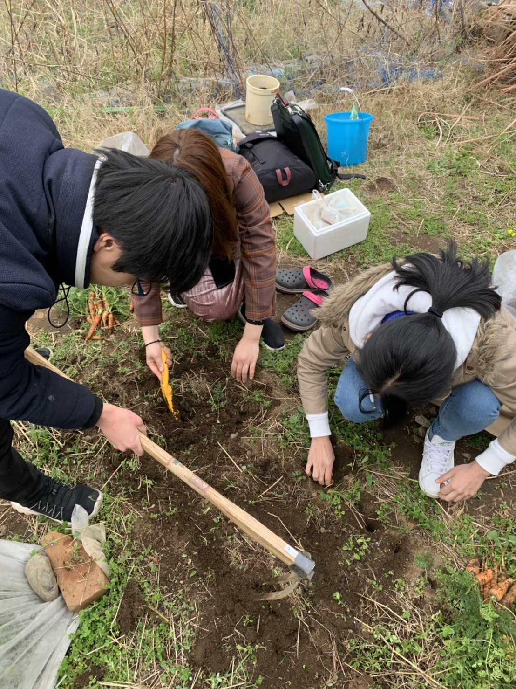
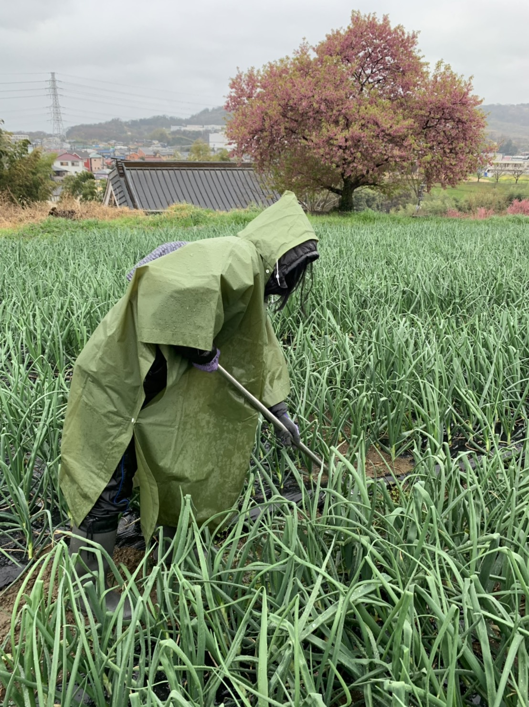

最近の活動報告と、農業経済のお話
2020.03.21 清水
こんにちは。前回の佐野さんと同じ研究室の準幽霊メンバー、清水です。今度の4月から修士2年になります。
なかなか先の見えないご時世ですが、皆さんいかがお過ごしでしょうか。私は家のトイレットペーパーが尽きてしまったので、先ほど1時間半くらい離れた実家に帰ってきました。普段の備えが大事ですね…。
さてアグリアンはというと、先週末も元気に農作業してきました！なんてったって畑は屋外だし、メンバーも散り散り。人混みを避け、ひたすら研究室とバイト先と家とを行き来する日々が続いていたので、とても良い気分転換になりました。
まず先週の金曜日。
弥生キャンパス奥の畑に、人参やほうれん草の種をまきました。小学校でミニトマトを育てて以来アグリアンに入るまで、ほとんど土いじりをしたことが無かった私。いつもその道のプロであるメンバーに教えてもらいつつ、見よう見まねで作業しています。おかげで将来は家庭菜園を持ちたいと思うようになりました。収穫できた旬の野菜でお味噌汁を作るのが夢。

畑の横には、昨年から置いているコンポストがあります。久しぶりにかき混ぜてみると、まるまる太ったミミズが出てきました。おお！食物連鎖！頑張って分解しておくれよ。
つづけて土曜日には、小田原の玉ねぎ畑に行って雑草を抜いてきました。ただ、天気はあいにくの雨。万全の備えで挑んだ私が、こちらです。

ポンチョをすっぽり被って、片手に雑草を抜く鎌を持った姿は、まさしく夜中にベッド脇にいるアイツですね。しかし見た目なんてどうだっていい。とにかく極寒でした。
玉ねぎとともに雑草もぐんぐん育っていたので抜くのは大変でしたが、鎌という文明の利器を手に入れたことにより、格段に効率が良くなりました。（今まで手で抜いていたのが信じられない。道理で腰の痛みも少ないわけです。）
帰りの車で高速にのったあたりから、なんと雨は季節外れの雪に変わりました。今回参加したメンバー（まるちゃん、よっすー、みずほちゃん、私）の中に、最強の雨女がいたのでしょう。私でなければ良いのですが。
そんなこんなで、玉ねぎは順調に育っています。
ところで、まるちゃんから私の専門である農業経済について語ってくれという自由度高めなお題をもらったので、最後に書いてみたいと思います。
農業経済と言っても、よくイメージのつかない人は多いと思います。せっかくなので、玉ねぎ農家の永沢くんを例にしてお話ししてみましょう。（ちびまる子ちゃんの、あの永沢くんね。）
「永沢くんは元々東京でサラリーマンをしていましたが、緑に囲まれた生活に憧れて農家に転身しました。選んだ栽培品目は、昔からなぜか親近感のあった玉ねぎです。
まずは玉ねぎを育てる土地を探さねばなりません。幸い、知り合いが小田原に良い土地を持っていて、貸してくれることになりました。農業を始めるには、他にも機械やトラック、種や肥料など必要なものがいっぱい。どう頑張ってもお金が足りないので、農業協同組合からの融資や政府の補助金を頼ることにしました。
さて、無事に玉ねぎを育て始めたはいいものの、思ったより作業は大変。アルバイトを雇って手伝ってもらうことにしました。作業を効率化するために、アルバイトの人にはスマホで進捗を記録してもらうことにしました。
様々な困難を乗り越えて漕ぎつけた初出荷の日。半分は農業協同組合へ、半分は地元小田原のスーパーへ出荷しました。
しかしここで、予期しなかった出来事が。今年は淡路島の玉ねぎが稀に見る豊作で、一気に全国的な玉ねぎの値段が下がってしまったのです。スーパーのバイヤーには予想より安く買われてしまいましたが、農業協同組合の下げ幅は小さかったので助かりました。
政府からも玉ねぎ農家の収入補填対策が発表されたので、何とか来年も生産を続けられそうです。」
さて、農業経済はこのお話の随所に深く関係しています。
まずは「農業経営」。
何を生産するにしても、まずは初期投資が必要です。ただ、農業は天候などリスクが大きいので普通の銀行ではなかなかお金を貸してもらえません。そのため、農業協同組合からお金を借りることが多いです。
また、限られた資源の中で生産効率を上げる努力も大切です。新しい機械に投資するか、人を雇うか、はたまた自分の体を酷使するか、経営判断が求められます。
さらに、出荷時のリスク分散も大事。いつも同じ値段で売れるとは限らないので、他の産地や需要の動向を見て慎重に売り先を決めなければなりません。
また、「農業政策」も重要な分野です。
例えば永沢くんのような新規就農者が土地を見つけやすくするためには、借りる条件を緩和したりマッチングを促す施策が効果的でしょう。
さらに農産物は価格の変化が激しいので、農家の収入を安定させる施策も大切です。直接補助金で支援するという方法もあれば、関税によって輸入を制限して国内の価格を維持することも考えられます。
ちなみに私が特に専門としているのは、何度か登場した「農業協同組合」についてですが、どんどん話が膨らんでしまうので､今回はここらへんで止めておこうと思います。万が一興味のある方がいれば、直接お話しましょう。
大変長くなってしまいましたが、アグリアンの最近の活動と農業経済のお話でした。それでは〜